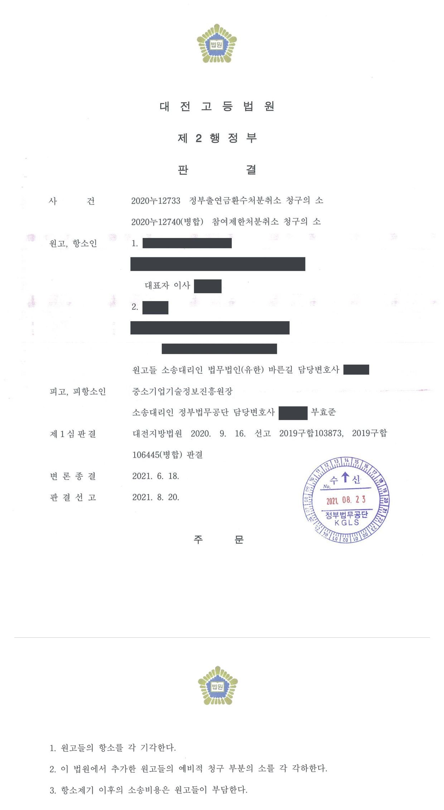

대학 산학협력단에 대한 국가연구개발사업 출연금 환수·참여제한처분 취소소송 (1·2심)
대전지방법원 2019구합103873 · 대전고등법원 2020누12733 · 담당변호사 부효준
판결문


사건의 요지
대학 산학협력단과 과제책임자인 교수에 대한 출연금 환수·3년 참여제한처분을 다툰 사건입니다. 1심은 이의신청 기각 통지(이의결정)가 처분이 아니라고 보아 소를 각하하였고, 항소심은 이의결정의 처분성은 인정하면서도 처분이 적법하다고 보아 항소를 기각하고 항소심에서 추가된 원처분 취소청구를 각하하였습니다.
사건의 주요 내용
대학 산학협력단이 주관기관으로, 지역 중소기업이 참여기업으로 참여한 2015년도 산학연협력 기술개발사업(첫걸음기술개발) 과제에 관한 사건입니다. 과제는 초음파를 이용한 유리창 세척 장치를 개발하는 것으로, 개발기간은 2015년 11월부터 2016년 11월까지 12개월, 총 사업비는 약 7,700만 원(정부지원금 약 5,800만 원)이었습니다. 개발기간이 두 달쯤 남은 2016년 9월 과제책임자가 같은 대학의 다른 교수인 원고로 변경되었습니다.
전문기관은 2017년 최종평가와 이의신청에 따른 재평가에서 과제를 '실패'로 판정하였고, 원고들이 제출한 성실성 입증보고서도 성실성검증위원회에서 받아들여지지 않았습니다. 전문기관은 2018년 9월 구 중소기업 기술혁신 촉진법 제31조·제32조에 따라 산학협력단에 약 3,160만 원의 출연금 환수처분을, 과제책임자인 원고에게 3년의 참여제한처분을 하였고(원처분), 이의신청을 기각하면서 참여제한 기간과 환수금 납부기한을 뒤로 옮긴 통지를 하였습니다(이의결정).
원고들은 이의결정의 취소를 구하는 행정심판을 청구하였으나 각하재결을 받았고, 이어 이의결정의 취소를 구하는 이 소송을 제기하였습니다. 1심은 이의결정이 처분이 아니라는 이유로 소를 모두 각하하였고, 원고들은 항소하면서 원처분의 취소를 구하는 예비적 청구를 추가하였습니다. 부효준 변호사는 1·2심에서 전문기관을 대리하였습니다.
쟁점
- 운영요령에 근거한 이의신청을 기각하면서 참여제한 기간의 시기·종기와 납부기한을 바꾼 전문기관의 이의결정이 원처분과 별개로 항고소송의 대상이 되는 처분인지
- 개발기간 종료 두 달 전에 과제책임자를 승계한 교수에게 3년의 참여제한을 하고, 귀책비율이 60%로 평가된 산학협력단에 환수처분을 한 것이 재량권을 일탈·남용한 것인지
- 이의결정이 새로운 처분이라면 항소심에서 추가한 원처분 취소청구(예비적 청구)가 적법한지
원고의 주장
- 이의결정으로 비로소 원고들의 권리·의무에 변동이 생겼으므로 이의결정은 항고소송의 대상이 되는 처분이고, 그 처분에는 처분사유가 없거나 재량권을 일탈·남용한 위법이 있다고 주장하였습니다.
- 과제책임자에 대한 참여제한처분으로 다른 국가연구개발사업에의 참여까지 제한받게 되었는데, 이는 법률에 근거가 없는 것이어서 위법하다고 주장하였습니다.
- 사업계획서에 따라 시제품을 만들고 특허를 출원하는 등 기술적·경제적 성과를 냈고 연구노트와 최종보고서를 작성하며 자체 보완활동도 하였으므로, '연구개발과정을 불성실하게 수행하여 그 결과가 극히 불량한 경우'에 해당하지 않는다고 주장하였습니다.
- 원고 교수는 변경된 과제책임자로서 전체 개발기간 중 약 2개월만 참여하였고, 성실성검증위원회가 산학협력단의 귀책을 60%로 평가하였는데도 전체 환수금의 약 80%를 산학협력단에 부담시킨 것은 비례원칙에 어긋나 재량권을 일탈·남용한 것이라고 주장하였습니다.
부효준 변호사의 주장
- 본안 전 항변으로, 이의결정은 원처분을 그대로 유지함을 전제로 이의신청을 받아들이지 않는다는 취지에 불과하여 원고들의 권리·의무에 새로운 변동을 가져오지 않으므로 항고소송의 대상인 처분이 아니고, 참여제한 기간이 달라진 것은 이의신청으로 원처분의 효력이 정지된 데 따른 것으로서 원처분서에 미리 안내되어 있었다고 주장하였습니다.
- 본안에서는 최종평가위원회·이의신청 평가위원회·성실성검증위원회가 거듭 '실패'와 '불성실'로 판정한 전문적 평가 결과를 존중해야 하고, 과제책임자를 중도에 승계한 이상 과제 전체의 권리·의무를 승계하므로 참여기간이 짧다는 이유로 감경할 수 없으며, 환수금은 자동회수금과 지방비 환수금을 합하면 총 사업비의 약 60%에 해당하여 귀책비율과 어긋나지 않는다고 다투었습니다.
법원의 판단
1심(대전지방법원)은 운영요령상 이의신청은 원처분을 한 전문기관이 스스로 다시 심사하는 절차에 불과하고 참여제한 기간의 변동은 원처분서에 예고되어 있었으므로 이의결정은 새로운 처분이 아니라고 보아 소를 모두 각하하였습니다. 그러나 항소심(대전고등법원)은 이의신청만으로 원처분의 효력이 정지된다고 볼 근거가 없는데도 전문기관이 제재조치위원회를 다시 열어 처분사유와 양정을 재심사한 뒤 참여제한 기간과 납부기한을 새로 정하였으므로, 이의결정은 원고들의 법률관계를 새롭게 규율하는 독립한 처분이라고 보아 본안 전 항변을 받아들이지 않았습니다.
다만 본안에서는 처분이 적법하다고 판단하였습니다. 사업계획서에 적은 성능지표에 관하여 개발기간이 끝날 때까지 공인인증기관의 성능시험을 받지 않았고 자체 측정으로도 목표치에 미치지 못한 점, 평가위원 전원이 '실패'로 판정하고 성실성검증위원회의 네 가지 지표 어느 항목에서도 '우수' 평가가 없었던 점, 원고들이 내세운 특허출원은 협약 전에 이루어져 과제의 성과로 볼 수 없는 점을 들어 전문적 평가 결과를 존중하였습니다. 참여제한의 효과가 다른 국가연구개발사업에 미치는 것은 구 과학기술기본법 규정에 따른 것일 뿐이라고 보아 법률유보 위반 주장도 배척하였습니다.
재량권에 관하여는, 과제책임자가 중도에 바뀌었더라도 스스로 과제책임자가 된 이상 과제의 모든 권리·의무를 승계하고 최종보고서 작성과 사업비 집행에 실질적으로 관여하였으며, 중도 변경을 이유로 감면한다면 과제책임자를 바꾸는 방법으로 제재를 피할 우려가 있다고 하였습니다. 환수금도 자동회수금과 지방비 환수금을 합하면 총 사업비의 약 60%여서 귀책비율과 어긋나지 않는다고 보았습니다. 결론으로, 원고들만 항소한 사건에서 1심의 각하를 기각으로 바꾸는 것은 불이익변경금지원칙에 어긋나므로 항소를 기각하고, 항소심에서 추가된 원처분 취소청구는 원처분이 이의결정에 흡수되어 소멸하였다는 이유로 각하하였습니다.
이 사건 원처분 및 이의결정은 모두 정부출연금 환수처분 및 참여제한처분을 내용으로 하고 있다. 그러나 이 사건 원처분은 유의사항에서 '위 처분에 대하여 이의가 있는 경우, 이의신청 절차에 따라 이의신청을 할 수 있고, 이의신청 시 명기된 제재기간은 변경될 수 있으며, 참여제한 기간은 이의신청 마감일 다음날부터 적용된다'고 명시하고 있다. 위 내용에 따르면 이의신청 여부 및 그 결정내용에 따라 제재기간이 변경될 수 있음이 예정되어 있어 이 사건 원처분만으로는 처분의 성립시기 및 내용이 불확정적이다. 그렇다면 이 사건 원처분이 아닌 이 사건 이의결정에 의하여 원고들의 지위가 최종적으로 변동되는 것이라고 볼 수 있다.
대전고등법원 2020누12733 판결 이유 '3. 다. 이 사건 이의결정의 처분성에 관한 판단' 1)
피고는 원고들의 이의신청으로 이 사건 원처분의 효력이 정지되어, 제재기간이 변경된 것일 뿐이고, 이를 미리 안내하였다고 주장한다. 그러나 행정처분은 행정소송 또는 행정심판의 제기에도 그 효력에 영향을 받지 아니하고(행정소송법 제23조 제1항, 행정심판법 제30조 제1항), 행정소송법 또는 행정심판법에 따라 효력정지 등의 결정이 있어야 비로소 효력이 정지된다. 그런데 이 사건 원처분에 대한 이의신청 절차는 행정규칙인 이 사건 운영요령 제39조에 근거를 둔 것에 지나지 아니하므로 원고들이 이의신청을 했다는 사정만으로 곧바로 이 사건 선행처분의 효력이 정지된다고 볼 수 없다. 또한 피고는 원고들에게 이 사건 원처분 중 참여제한 처분과 관련하여 '이의신청 시 명기된 제재기간은 변경될 수 있다.'라고 고지하였는데, 이는 '이의결정일까지 이 사건 선행처분의 효력을 정지한다'는 의미로 해석되지 않는다. 그럼에도 이 사건 원처분에서 정한 참여제한의 기간은 그 시기와 종기가 종국적으로 변경되었으므로, 이의신청으로 인하여 이 사건 선행처분의 효력이 정지되었다고 볼 수 없고, 피고가 이 사건 이의결정을 하면서 별도로 참여제한의 기간을 정하였다고 보는 것이 합리적이다.
대전고등법원 2020누12733 판결 이유 '3. 다. 이 사건 이의결정의 처분성에 관한 판단' 3)
구 중소기업기술혁신법 시행령에서 말하는 '연구개발과정의 불성실 수행 여부'와 '연구 결과의 극히 불량 여부'는 별도로 판단하여야 하고, 연구 결과가 극히 불량하다고 하여 연구개발과정의 불성실이 추정되는 것은 아니다. '연구개발과정의 불성실 수행 여부'는 연구개발사업의 전제가 된 사업계획서의 내용, 사업추진의 구체적 경과, 사업의 기초가 된 협약의 위반 여부 등 제반 사정을 종합적으로 고려하여 사회통념에 따라 합리적으로 판단하여야 한다(대법원 2015. 4. 23. 선고 2014두47969 판결 등 참조).
대전고등법원 2020누12733 판결 이유 '4. 다. 처분사유 부존재에 관한 판단 — 2) 관련 법리'
※ 판결 이유 가운데 이 사건의 판단 기준이 된 부분을 그대로 옮긴 것으로, 당사자 이름 등은 가렸습니다.
이 사건이 보여 주는 것
전문기관의 이의결정이 항고소송의 대상인지에 관하여 1심과 항소심의 판단이 갈린 사건입니다. 항소심은 이의신청만으로 원처분의 효력이 정지되지 않는데도 참여제한 기간을 새로 정하였다면 이의결정이 새로운 처분이 되고 원처분은 그에 흡수되어 소멸한다고 보았습니다. 법원마다 결론이 다를 수 있으므로, 이의신청과 별도로 원처분의 제소기간을 관리하고 소를 제기할 때는 원처분과 이의결정을 함께 다투어 두는 것이 안전합니다.
본안에서는 과제책임자를 중도에 승계한 사람도 과제 전체에 대한 책임을 지고 참여기간이 짧다는 사정만으로 참여제한이 감경되지 않는다는 점, 환수금의 비율을 다툴 때는 참여기업 부담금과 자동회수금·지방비 환수금을 반영한 실제 산정 구조를 확인해야 한다는 점을 보여 줍니다. 사업계획서에 공인인증기관의 성능시험을 받겠다고 적었다면 개발기간 안에 그 시험을 받아 두는 것이 '성실 수행' 판단의 핵심 자료가 됩니다.
비슷한 처분을 받으셨다면
국가연구개발 제재처분은 사전통지를 받은 날부터 20일 이내에 재검토 요청 의견을 내고, 처분이 있음을 안 날부터 90일 이내에 취소소송을 제기해야 합니다. 처분서나 사전통지서를 받은 날짜부터 확인해 드립니다.